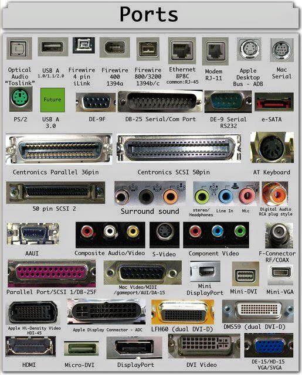

សូមជ្រើសរើសមុខជំនាញដែលអ្នកចង់ធ្វើតេស្ត ដើម្បីវាយតម្លៃកម្រិតយល់ដឹងរបស់អ្នក (៥០ សំណួរក្នុងមួយជំនាញ)។
Word, Excel, PowerPoint
ជំនាញវាយអត្ថបទ និងរៀបចំឯកសារ
ជំនាញគណនា និងរៀបចំទិន្នន័យ
ជំនាញរៀបចំបទបង្ហាញ
HTML, CSS, JS, Coding
Photoshop, Illustrator
Adv. Word, Excel, VBA
CPU, RAM, Motherboard...
OS, កម្មវិធី, Drivers...
Grammar, Vocabulary, Reading
អានសេចក្តីពន្យល់លម្អិត និងស្វែងយល់បន្ថែមអំពីគ្រឿងបន្លាស់ និងបច្ចេកវិទ្យាកុំព្យូទ័រ។
Motherboard គឺជាបន្ទះសៀគ្វីធំជាងគេនៅក្នុងកុំព្យូទ័រ ដែលដើរតួជា "ប្រព័ន្ធសរសៃប្រសាទកណ្តាល"។ គ្រឿងបន្លាស់ទាំងអស់ ដូចជា CPU, RAM, Hard Disk, VGA និងរន្ធដោតផ្សេងៗ សុទ្ធតែត្រូវដោតភ្ជាប់ទៅកាន់វា។ វាអនុញ្ញាតឲ្យគ្រឿងបន្លាស់ទាំងនេះអាចប្រាស្រ័យទាក់ទង និងផ្លាស់ប្តូរទិន្នន័យគ្នាទៅវិញទៅមកបានយ៉ាងរលូន។
CPU (Central Processing Unit) ប្រៀបបានទៅនឹង "ខួរក្បាល" របស់កុំព្យូទ័រ។ វាទទួលបន្ទុកគណនា និងអនុវត្តរាល់បទបញ្ជាដែលកម្មវិធីផ្តល់ឲ្យ។ ល្បឿនលឿន ឬយឺតរបស់កុំព្យូទ័រមួយភាគធំ គឺអាស្រ័យលើទំហំល្បឿន (GHz) និងចំនួន Core របស់ CPU នេះឯង។ កាលណា CPU ខ្លាំង វានឹងជួយឲ្យកុំព្យូទ័រដើរស្រួល មិនងាយគាំង។
RAM (Random Access Memory) ជាកន្លែងសម្រាប់ផ្ទុកទិន្នន័យបណ្តោះអាសន្ន ដើម្បីឲ្យ CPU ទាញយកទៅប្រើប្រាស់បានលឿនជាងទាញពី Hard Disk ផ្ទាល់។ កាលណាយើងមាន RAM ធំ កុំព្យូទ័រអាចបើកកម្មវិធី ឬ Chrome Tabs បានច្រើនក្នុងពេលតែមួយដោយមិនយឺត។ ទិន្នន័យក្នុង RAM នឹងត្រូវលុបចោលទាំងស្រុងពេលកុំព្យូទ័ររលត់។
GPU (Graphics Processing Unit) ជាអ្នកទទួលបន្ទុកគណនា និងបញ្ចេញរូបភាព វីដេអូ ឬហ្គេម 3D ទៅកាន់អេក្រង់កុំព្យូទ័ររបស់អ្នក។ សម្រាប់អ្នករចនាក្រាហ្វិក កាត់តវីដេអូ ឬលេងហ្គេម កាតក្រាហ្វិកដាច់ (Dedicated VGA) គឺពិតជាសំខាន់ខ្លាំងណាស់ ដើម្បីឲ្យរូបភាពដើររលូនល្អ មិនដាច់ៗ (Lag)។
អេក្រង់កុំព្យូទ័រ (Monitor) គឺជាឧបករណ៍បញ្ចេញ (Output Device) ដ៏សំខាន់បំផុតមួយ ដែលមានតួនាទីបង្ហាញរូបភាព វីដេអូ និងព័ត៌មានផ្សេងៗចេញពីកុំព្យូទ័រឲ្យយើងមើលឃើញ។ គុណភាពនៃអេក្រង់អាស្រ័យលើកម្រិតភាពច្បាស់ (Resolution), ល្បឿនបង្ហាញរូបភាព (Refresh Rate) និងប្រភេទបន្ទះអេក្រង់ (Panel Type) ដូចជា IPS, VA ឬ TN ជាដើម។
ក្តារចុច (Keyboard) និងកណ្តុរ (Mouse) គឺជាឧបករណ៍បញ្ចូល (Input Devices) ចម្បងសម្រាប់បញ្ជាកុំព្យូទ័រ។ ក្តារចុចមានតួនាទីវាយបញ្ចូលអត្ថបទ និងតួអក្សរផ្សេងៗ ខណៈដែលកណ្តុរមានតួនាទីចង្អុល ជ្រើសរើស និងអូសទម្លាក់ទិន្នន័យនៅលើអេក្រង់។ ឧបករណ៍ទាំងពីរនេះជួយឲ្យការប្រើប្រាស់កុំព្យូទ័រប្រព្រឹត្តទៅបានយ៉ាងងាយស្រួល និងរហ័ស។
ឧបករណ៍ផ្ទុកទិន្នន័យ (Storage) ដូចជា HDD (Hard Disk Drive) និង SSD (Solid State Drive) ជាកន្លែងសម្រាប់រក្សាទុកប្រព័ន្ធប្រតិបត្តិការ កម្មវិធី និងឯកសាររបស់អ្នកជាអចិន្ត្រៃយ៍។ បច្ចុប្បន្ន SSD ទទួលបានការពេញនិយមខ្លាំងជាង HDD ដោយសារវាមានល្បឿនអាន និងសរសេរទិន្នន័យលឿនជាងរាប់សិបដង ធ្វើឲ្យកុំព្យូទ័រដំណើរការបានយ៉ាងរហ័ស។
Power Supply Unit (PSU) មានតួនាទីយ៉ាងសំខាន់ក្នុងការទទួលយកចរន្តអគ្គិសនីពីព្រីភ្លើង (AC) មកបំប្លែងទៅជាចរន្ត (DC) ដើម្បីផ្គត់ផ្គង់ថាមពលទៅកាន់គ្រប់គ្រឿងបន្លាស់ទាំងអស់នៅក្នុងកុំព្យូទ័រ។ ការជ្រើសរើស PSU ដែលមានគុណភាពល្អ និងទំហំវ៉ាត់ (Watt) គ្រប់គ្រាន់ គឺជួយធានាដល់សុវត្ថិភាព និងអាយុកាលរបស់កុំព្យូទ័រ។
ប្រព័ន្ធប្រតិបត្តិការ (OS) ដូចជា Windows, macOS, ឫ Linux គឺជាកម្មវិធីមេដែលគ្រប់គ្រងផ្នែករឹង (Hardware) និងកម្មវិធីផ្សេងៗទៀត (Software) ទាំងអស់នៅក្នុងកុំព្យូទ័រ។ បើគ្មាន OS ទេ កុំព្យូទ័រមិនអាចដំណើរការបានឡើយ វាប្រៀបដូចជារាងកាយដែលគ្មានព្រលឹងអញ្ចឹង។
Application Software គឺជាកម្មវិធីដែលត្រូវបានបង្កើតឡើងសម្រាប់ឲ្យអ្នកប្រើប្រាស់ធ្វើការងារជាក់លាក់ណាមួយ។ ឧទាហរណ៍៖ Microsoft Word សម្រាប់វាយអត្ថបទ, Google Chrome សម្រាប់លេងអ៊ីនធឺណិត, និង Adobe Photoshop សម្រាប់កាត់តរូបភាពជាដើម។
បណ្តាញកុំព្យូទ័រ គឺជាការតភ្ជាប់កុំព្យូទ័រពីរ ឬច្រើនបញ្ចូលគ្នា ដើម្បីចែករំលែកទិន្នន័យ ម៉ាស៊ីនបោះពុម្ព និងការប្រើប្រាស់អ៊ីនធឺណិតរួមគ្នា។ អ៊ីនធឺណិត (Internet) ដែលយើងប្រើប្រាស់សព្វថ្ងៃ គឺជាបណ្តាញកុំព្យូទ័រដ៏ធំបំផុតនៅលើពិភពលោក។
មេរោគកុំព្យូទ័រ (Malware/Virus) គឺជាកម្មវិធីអាក្រក់ដែលបង្កើតឡើងដើម្បីលួចទិន្នន័យ បំផ្លាញឯកសារ ឬធ្វើឲ្យកុំព្យូទ័រខូច។ ការប្រើប្រាស់កម្មវិធីកម្ចាត់មេរោគ (Antivirus), ការមិនចុចលើតំណភ្ជាប់មិនច្បាស់លាស់ និងការប្រើលេខសម្ងាត់រឹងមាំ គឺជាវិធីល្អបំផុតដើម្បីការពារកុំព្យូទ័ររបស់អ្នក។
រន្ធតភ្ជាប់ (Ports) មានតួនាទីជាច្រកសម្រាប់បញ្ជូនទិន្នន័យចេញ និងចូលរវាងកុំព្យូទ័រ និងឧបករណ៍ខាងក្រៅ។ រន្ធដែលពេញនិយមមានដូចជា USB (សម្រាប់ Flash Drive, Mouse), HDMI (សម្រាប់បញ្ចេញរូបភាពទៅអេក្រង់) និង Audio Jack (សម្រាប់កាសស្តាប់ត្រចៀក)។

ការថែទាំកុំព្យូទ័រឲ្យបានត្រឹមត្រូវ នឹងជួយឲ្យវាមានអាយុកាលប្រើប្រាស់បានយូរ និងដំណើរការបានល្អ។ ការថែទាំរួមមាន៖ ការសម្អាតធូលីខាងក្នុងម៉ាស៊ីន ការអាប់ដេតកម្មវិធី (Update Software) និងការមិនទាញយកឯកសារដែលមានប្រភពមិនច្បាស់លាស់។
Cloud Storage អនុញ្ញាតឲ្យយើងរក្សាទុកឯកសារនៅលើ Server តាមរយៈអ៊ីនធឺណិត (ឧទាហរណ៍៖ Google Drive, OneDrive, Dropbox) ជំនួសឲ្យការទុកក្នុង Flash Drive ឬ Hard Disk ផ្ទាល់។ វាជួយឲ្យយើងអាចបើកឯកសារពីគ្រប់ទីកន្លែង គ្រប់ឧបករណ៍ និងការពារការបាត់បង់ទិន្នន័យនៅពេលកុំព្យូទ័រខូច។
Web Browser គឺជាកម្មវិធីដែលយើងប្រើសម្រាប់ចូលមើលគេហទំព័រនានានៅលើអ៊ីនធឺណិត ដូចជា Google Chrome, Safari, Firefox ឬ Microsoft Edge។ វាមានតួនាទីបំប្លែងកូដ HTML, CSS និងទិន្នន័យផ្សេងៗ ឲ្យទៅជាផ្ទាំងរូបភាព និងអត្ថបទដែលយើងអាចមើលយល់។
Printer (ម៉ាស៊ីនបោះពុម្ព) គឺជាឧបករណ៍បញ្ចេញទិន្នន័យ (Output) ដែលបំប្លែងឯកសារទន់ (Soft copy) ពីកុំព្យូទ័រ ទៅជាឯកសាររឹង (Hard copy) លើក្រដាស។ ចំណែក Scanner (ម៉ាស៊ីនស្កេន) ជាឧបករណ៍បញ្ចូលទិន្នន័យ (Input) ដែលថតចម្លងឯកសារលើក្រដាស បញ្ចូលទៅជាទម្រង់រូបភាព ឬឯកសារក្នុងកុំព្យូទ័រវិញ។
Troubleshooting គឺជាដំណើរការនៃការស្វែងរក និងដោះស្រាយបញ្ហានៅពេលដែលកុំព្យូទ័រដើរមិនប្រក្រតី ឬមានកំហុស (Error)។ ជំហានដំបូង និងមានប្រសិទ្ធភាពបំផុតនៅពេលកម្មវិធីគាំង ឬកុំព្យូទ័រជាប់គាំង គឺការសាកល្បង Restart (បិទបើកថ្មី) កុំព្យូទ័ររបស់អ្នក។
Ergonomics សំដៅលើការរៀបចំកន្លែងអង្គុយធ្វើការឲ្យបានត្រឹមត្រូវ ដើម្បីការពារបញ្ហាសុខភាពដូចជា ឈឺខ្នង ឬស្រវាំងភ្នែក។ អ្នកគួរអង្គុយឲ្យត្រង់ខ្នង ទុកគម្លាតពីអេក្រង់ប្រមាណមួយចង្អាមដៃកន្លះ និងអនុវត្តច្បាប់ 20-20-20 (រៀងរាល់ ២០នាទី មើលទៅឆ្ងាយចម្ងាយ ២០ហ្វីត រយៈពេល ២០វិនាទី) ដើម្បីសម្រាកភ្នែក។
សន្តិសុខអុីនធឺណិត ឬ Cybersecurity គឺជាការអនុវត្តន៍វិធានការការពារប្រព័ន្ធកុំព្យូទ័រ បណ្តាញ និងទិន្នន័យពីការវាយប្រហារ ឬការចូលប្រើប្រាស់ដោយគ្មានការអនុញ្ញាត។ ការប្រើប្រាស់ពាក្យសម្ងាត់ដែលរឹងមាំ ការបើកមុខងារផ្ទៀងផ្ទាត់២ដំណាក់កាល 2FA (Two-Factor Authentication) និងការប្រុងប្រយ័ត្នចំពោះសារបោកប្រាស់ (Phishing) គឺជាវិធីសាស្ត្រការពារខ្លួនដ៏សំខាន់។
បញ្ញាសិប្បនិម្មិត (AI) សំដៅលើការបង្កើតម៉ាស៊ីន ឬប្រព័ន្ធកុំព្យូទ័រ ដែលអាចគិត រៀនសូត្រ និងដោះស្រាយបញ្ហាប្រហាក់ប្រហែលមនុស្ស។ បច្ចុប្បន្ន AI ត្រូវបានប្រើប្រាស់យ៉ាងទូលំទូលាយ ដូចជាការបកប្រែភាសា ការសម្គាល់ផ្ទៃមុខ រថយន្តបើកបរដោយខ្លួនឯង និងជំនួយការនិម្មិត (Virtual Assistants) ដូចជា ChatGPT ជាដើម។
ភាសាសរសេរកូដ គឺជាភាសាដែលមនុស្សប្រើដើម្បីផ្តល់បទបញ្ជាឲ្យកុំព្យូទ័រធ្វើការ។ ភាសានីមួយៗមានអត្ថប្រយោជន៍រៀងៗខ្លួន ឧទាហរណ៍ Python ល្អសម្រាប់ការវិភាគទិន្នន័យនិង AI, JavaScript ល្អសម្រាប់បង្កើតវែបសាយ និង C++ ឬ C# ល្អសម្រាប់ការបង្កើតហ្គេមនិងកម្មវិធីធំៗស្មុគស្មាញ។
ការបម្រុងទុកទិន្នន័យ (Backup) គឺជាការថតចម្លងឯកសារ ឬទិន្នន័យសំខាន់ៗទុកនៅកន្លែងផ្សេងមួយទៀត ដើម្បីការពារកុំឲ្យបាត់បង់នៅពេលកុំព្យូទ័រមានបញ្ហា មេរោគចូល ឬលុបដោយអចេតនា។ គោលការណ៍ 3-2-1 ជាវិធីសាស្ត្រល្អបំផុតគឺ ថតចម្លង ៣ ច្បាប់ ទុកលើឧបករណ៍ ២ ប្រភេទផ្សេងគ្នា និង ១ ច្បាប់ទុកនៅក្រៅកន្លែងធ្វើការ ឬទុកលើ Cloud។
មូលដ្ឋានទិន្នន័យ (Database) គឺជាកន្លែងប្រមូលផ្តុំ និងរៀបចំទិន្នន័យយ៉ាងមានសណ្តាប់ធ្នាប់ ដែលងាយស្រួលក្នុងការស្វែងរក គ្រប់គ្រង និងធ្វើបច្ចុប្បន្នភាព។ ប្រព័ន្ធគ្រប់គ្រងមូលដ្ឋានទិន្នន័យ (DBMS) ដូចជា MySQL, Oracle ឬ MongoDB អនុញ្ញាតឲ្យកម្មវិធី និងវែបសាយនានាអាចទាញយកទិន្នន័យបានយ៉ាងរហ័ស និងមានសុវត្ថិភាព។
ការអភិវឌ្ឍន៍វែបសាយ (Web Development) គឺជាដំណើរការនៃការបង្កើតគេហទំព័រសម្រាប់ដាក់ឱ្យដំណើរការលើអ៊ីនធឺណិត។ វាត្រូវបានបែងចែកជាពីរផ្នែកសំខាន់ៗគឺ Front-end (ផ្នែកខាងមុខដែលអ្នកប្រើប្រាស់មើលឃើញ) ដែលប្រើប្រាស់ HTML, CSS និង JavaScript និង Back-end (ផ្នែកខាងក្រោយ ឬ Server) ដែលប្រើប្រាស់ភាសាដូចជា PHP, Python ឬ Node.js ដើម្បីគ្រប់គ្រងទិន្នន័យ។
ការអភិវឌ្ឍន៍កម្មវិធីទូរស័ព្ទ គឺជាការសរសេរកូដដើម្បីបង្កើតកម្មវិធីសម្រាប់ដំណើរការលើទូរស័ព្ទឆ្លាតវៃ ដូចជា Android និង iOS។ អ្នកអភិវឌ្ឍន៍អាចប្រើប្រាស់ភាសាដើម (Native) ដូចជា Kotlin សម្រាប់ Android និង Swift សម្រាប់ iOS ឬប្រើប្រាស់បច្ចេកវិទ្យា Cross-platform ដូចជា Flutter និង React Native ដើម្បីសរសេរកូដតែម្តង អាចដើរបានទាំងពីរប្រព័ន្ធ។
UI/UX Design គឺជាជំនាញរចនាដែលផ្តោតលើសោភ័ណភាព និងភាពងាយស្រួលក្នុងការប្រើប្រាស់។ UI (User Interface) ផ្តោតលើការរចនាពណ៌ អក្សរ និងប៊ូតុង ចំណែក UX (User Experience) ផ្តោតលើបទពិសោធន៍ទូទៅរបស់អ្នកប្រើប្រាស់ ថាតើគេហទំព័រ ឬកម្មវិធីនោះងាយស្រួលចុច និងស្វែងរកព័ត៌មានដែរឬទេ។
បច្ចេកវិទ្យាក្លោដ (Cloud Computing) គឺជាការផ្តល់សេវាកម្មកុំព្យូទ័រ ដូចជាកន្លែងផ្ទុកទិន្នន័យ ម៉ាស៊ីនមេ (Servers) និងកម្មវិធី តាមរយៈអ៊ីនធឺណិត។ ជំនួសឲ្យការទិញម៉ាស៊ីន Server ថ្លៃៗទុកនៅក្រុមហ៊ុន អ្នកអាចជួលសេវាកម្មពីក្រុមហ៊ុនធំៗដូចជា Amazon Web Services (AWS), Google Cloud ឬ Microsoft Azure ដោយចំណាយត្រឹមតែអ្វីដែលអ្នកប្រើប្រាស់ប៉ុណ្ណោះ។
អ៊ីនធឺណិតនៃវត្ថុ (IoT) សំដៅលើបណ្តាញនៃឧបករណ៍ប្រើប្រាស់ប្រចាំថ្ងៃ ដែលត្រូវបានភ្ជាប់ទៅអ៊ីនធឺណិត ដើម្បីប្រមូល និងផ្លាស់ប្តូរទិន្នន័យ។ ឧទាហរណ៍ដូចជា អំពូលភ្លើងឆ្លាតវៃ ទូរទស្សន៍ឆ្លាតវៃ កាមេរ៉ាសុវត្ថិភាព និងនាឡិកាឆ្លាតវៃ ដែលអនុញ្ញាតឲ្យយើងបញ្ជា និងតាមដានពួកវាពីចម្ងាយតាមរយៈទូរស័ព្ទដៃ។
ប្រព័ន្ធគ្រប់គ្រងកំណែ (Version Control System) ដូចជា Git អនុញ្ញាតឱ្យអ្នកអភិវឌ្ឍន៍រក្សាទុកប្រវត្តិនៃការផ្លាស់ប្តូរកូដ និងត្រឡប់ទៅរកទម្រង់ចាស់បានយ៉ាងងាយស្រួលប្រសិនបើមានកំហុស។ ចំណែក GitHub គឺជាកន្លែងផ្ទុក (Hosting) លើអ៊ីនធឺណិតដែលជួយឱ្យអ្នកសរសេរកូដជាច្រើននាក់អាចធ្វើការរួមគ្នាលើគម្រោងតែមួយបានក្នុងពេលតែមួយ។
វិទ្យាសាស្ត្រទិន្នន័យ (Data Science) គឺជាការសិក្សា និងទាញយកចំណេះដឹងឬព័ត៌មានសំខាន់ៗពីទិន្នន័យដ៏ច្រើនសន្ធឹកសន្ធាប់ ដោយប្រើប្រាស់គណិតវិទ្យា ស្ថិតិ និងការសរសេរកូដ (ដូចជា Python ឬ R)។ វាត្រូវបានប្រើប្រាស់យ៉ាងទូលំទូលាយដើម្បីទស្សន៍ទាយនិន្នាការទីផ្សារ និងជួយដល់ការសម្រេចចិត្តក្នុងអាជីវកម្ម។
Blockchain គឺជាបច្ចេកវិទ្យាផ្ទុកទិន្នន័យបែបវិមជ្ឈការ (Decentralized) ដែលមានសុវត្ថិភាពខ្ពស់ និងមិនអាចលួចកែប្រែបានឡើយ។ វាគឺជាមូលដ្ឋានគ្រឹះនៃរូបិយប័ណ្ណឌីជីថល (Cryptocurrency) ដូចជា Bitcoin និងត្រូវបានប្រើប្រាស់ក្នុងវិស័យហិរញ្ញវត្ថុ កិច្ចសន្យាឆ្លាតវៃ (Smart Contracts) និងការផ្ទេរប្រាក់ឆ្លងប្រទេស។
VR (Virtual Reality) បញ្ចូលអ្នកប្រើប្រាស់ទៅក្នុងពិភពនិម្មិតទាំងស្រុងតាមរយៈវ៉ែនតាពិសេស ចំណែក AR (Augmented Reality) បញ្ចូលរូបភាពឌីជីថលទៅក្នុងពិភពពិតប្រាកដ (ឧទាហរណ៍៖ ហ្គេម Pokémon GO ឬតម្រងមុខក្នុង TikTok)។ បច្ចេកវិទ្យាទាំងពីរនេះកំពុងពេញនិយមក្នុងវិស័យហ្គេម ការអប់រំ និងវេជ្ជសាស្ត្រ។
ទីផ្សារឌីជីថល គឺជាការផ្សព្វផ្សាយផលិតផល ឬសេវាកម្មតាមរយៈប្រព័ន្ធអ៊ីនធឺណិត និងបច្ចេកវិទ្យាឌីជីថល ដូចជា Facebook, Google, និង YouTube។ ការយល់ដឹងពីការធ្វើ SEO (Search Engine Optimization), ការរត់ពាណិជ្ជកម្ម (Ads) និងការបង្កើតមាតិកា (Content) គឺជាជំនាញដ៏ចាំបាច់សម្រាប់អាជីវកម្មសម័យថ្មី។
Adobe Premiere Pro គឺជាកម្មវិធីកាត់តវីដេអូស្តង់ដារដែលត្រូវបានប្រើប្រាស់យ៉ាងទូលំទូលាយក្នុងវិស័យភាពយន្ត ទូរទស្សន៍ និងបណ្តាញសង្គម។ វាអនុញ្ញាតឱ្យអ្នកកាត់តវីដេអូ បញ្ចូលសំឡេង កែពណ៌ (Color Grading) និងបន្ថែមអក្សរបានយ៉ាងល្អឥតខ្ចោះ។ Adobe Premiere Pro គឺជាកម្មវិធីកាត់តវីដេអូស្តង់ដារដែលត្រូវបានប្រើប្រាស់យ៉ាងទូលំទូលាយក្នុងវិស័យភាពយន្ត ទូរទស្សន៍ និងបណ្តាញសង្គម។ វាអនុញ្ញាតឱ្យអ្នកកាត់តវីដេអូ បញ្ចូលសំឡេង កែពណ៌ (Color Grading) និងបន្ថែមអក្សរបានយ៉ាងល្អឥតខ្ចោះ។
ផ្ទុយពីកម្មវិធីកាត់តទូទៅ Adobe After Effects ផ្តោតទៅលើការបង្កើតចលនាក្រាហ្វិក (Motion Graphics) និងបែបផែនពិសេស (Visual Effects - VFX) ដូចជា ការធ្វើឱ្យអក្សរមានចលនា ការលុបផ្ទៃខាងក្រោយពណ៌បៃតង (Green Screen) និងការបង្កើតចលនា 2D/3D។ ផ្ទុយពីកម្មវិធីកាត់តទូទៅ Adobe After Effects ផ្តោតទៅលើការបង្កើតចលនាក្រាហ្វិក (Motion Graphics) និងបែបផែនពិសេស (Visual Effects - VFX) ដូចជា ការធ្វើឱ្យអក្សរមានចលនា ការលុបផ្ទៃខាងក្រោយពណ៌បៃតង (Green Screen) និងការបង្កើតចលនា 2D/3D។
ការកាត់តវីដេអូនៅលើទូរស័ព្ទដៃដោយប្រើកម្មវិធីដូចជា CapCut កំពុងទទួលបានការពេញនិយមយ៉ាងខ្លាំងសម្រាប់អ្នកបង្កើតមាតិកា (Content Creators) ដោយសារតែវាងាយស្រួលប្រើ មានបែបផែនស្រាប់ៗច្រើន និងអាចធ្វើការងារបានរហ័សសម្រាប់បង្ហោះលើបណ្តាញសង្គមផ្សេងៗ។ ការកាត់តវីដេអូនៅលើទូរស័ព្ទដៃដោយប្រើកម្មវិធីដូចជា CapCut កំពុងទទួលបានការពេញនិយមយ៉ាងខ្លាំងសម្រាប់អ្នកបង្កើតមាតិកា (Content Creators) ដោយសារតែវាងាយស្រួលប្រើ មានបែបផែនស្រាប់ៗច្រើន និងអាចធ្វើការងារបានរហ័សសម្រាប់បង្ហោះលើបណ្តាញសង្គមផ្សេងៗ។
Python គឺជាភាសាសរសេរកូដដែលពេញនិយមបំផុតមួយនៅលើពិភពលោក ដោយសារតែវាងាយស្រួលរៀន មានទម្រង់កូដខ្លី និងច្បាស់លាស់។ វាត្រូវបានគេយកទៅប្រើប្រាស់ក្នុងវិស័យជាច្រើនដូចជា ការបង្កើតវែបសាយ ការវិភាគទិន្នន័យ (Data Analysis) និងបញ្ញាសិប្បនិម្មិត (AI)។ Python គឺជាភាសាសរសេរកូដដែលពេញនិយមបំផុតមួយនៅលើពិភពលោក ដោយសារតែវាងាយស្រួលរៀន មានទម្រង់កូដខ្លី និងច្បាស់លាស់។ វាត្រូវបានគេយកទៅប្រើប្រាស់ក្នុងវិស័យជាច្រើនដូចជា ការបង្កើតវែបសាយ ការវិភាគទិន្នន័យ (Data Analysis) និងបញ្ញាសិប្បនិម្មិត (AI)។
Object-Oriented Programming (OOP) គឺជាទម្រង់នៃការសរសេរកូដដែលរៀបចំកម្មវិធីដោយផ្អែកលើ "វត្ថុ" (Objects) ដែលមានផ្ទុកទិន្នន័យនិងមុខងារ។ គោលការណ៍សំខាន់ៗរបស់វាជួយឱ្យកូដមានសណ្តាប់ធ្នាប់ ងាយស្រួលកែប្រែ និងអាចយកទៅប្រើឡើងវិញបាន។ Object-Oriented Programming (OOP) គឺជាទម្រង់នៃការសរសេរកូដដែលរៀបចំកម្មវិធីដោយផ្អែកលើ "វត្ថុ" (Objects) ដែលមានផ្ទុកទិន្នន័យនិងមុខងារ។ គោលការណ៍សំខាន់ៗរបស់វាជួយឱ្យកូដមានសណ្តាប់ធ្នាប់ ងាយស្រួលកែប្រែ និងអាចយកទៅប្រើឡើងវិញបាន។
ក្បួនដោះស្រាយ (Algorithm) គឺជាជំហាននៃការដោះស្រាយបញ្ហា ចំណែកឯរចនាសម្ព័ន្ធទិន្នន័យ (Data Structure) គឺជារបៀបរៀបចំទិន្នន័យឱ្យមានប្រសិទ្ធភាព។ ការយល់ដឹងពីចំណុចទាំងពីរនេះ គឺជាមូលដ្ឋានគ្រឹះដ៏សំខាន់បំផុតសម្រាប់អ្នកសរសេរកម្មវិធី។ ក្បួនដោះស្រាយ (Algorithm) គឺជាជំហាននៃការដោះស្រាយបញ្ហា ចំណែកឯរចនាសម្ព័ន្ធទិន្នន័យ (Data Structure) គឺជារបៀបរៀបចំទិន្នន័យឱ្យមានប្រសិទ្ធភាព។ ការយល់ដឹងពីចំណុចទាំងពីរនេះ គឺជាមូលដ្ឋានគ្រឹះដ៏សំខាន់បំផុតសម្រាប់អ្នកសរសេរកម្មវិធី។
សូមស្វាគមន៍មកកាន់មេរៀនដំបូង! នៅក្នុងមេរៀននេះ យើងនឹងស្វែងយល់អំពី៖
បន្ទាប់ពីវាយអត្ថបទរួចរាល់ អ្នកត្រូវចេះរក្សាទុកវាដើម្បីកុំឱ្យបាត់បង់៖
ដើម្បីឱ្យអត្ថបទងាយអាន និងមានសោភ័ណភាព អ្នកអាចកែប្រែវាបាននៅត្រង់ Home Tab៖
ការតម្រឹមអត្ថបទជួយឱ្យឯកសាររបស់អ្នកមានរបៀបរៀបរយល្អ។ អ្នកអាចតម្រឹមវានៅក្នុង Home Tab (Paragraph Group)៖
ដើម្បីរៀបចំអត្ថបទជាលក្ខណៈបញ្ជីរាយនាម (List) ឱ្យងាយស្រួលមើល សូមប្រើប្រាស់៖
អ្នកអាចធ្វើឱ្យឯកសារកាន់តែទាក់ទាញដោយការបញ្ចូលរូបភាព (Insert > Pictures) និងការកំណត់ទីតាំងរបស់វា៖
តារាងជួយរៀបចំទិន្នន័យឱ្យមានសណ្តាប់ធ្នាប់ល្អ។ អ្នកអាចបង្កើតវាដោយចូលទៅកាន់ Insert > Table៖
ដើម្បីតុបតែងទំព័រឯកសារ (ដូចជាធ្វើគម្របសៀវភៅ ឬលិខិតសរសើរ) អ្នកអាចចូលទៅកាន់ Design Tab៖
មុនពេលបោះពុម្ព អ្នកត្រូវត្រួតពិនិត្យ និងរៀបចំទំហំក្រដាសនៅក្នុង Layout Tab៖
ដើម្បីដាក់ព័ត៌មានដែលបង្ហាញគ្រប់ទំព័រ (ដូចជា ឈ្មោះស្ថាប័ន លេខទំព័រ) សូមចូលទៅកាន់ Insert Tab៖
Mail Merge គឺជាមុខងារដ៏អស្ចារ្យ សម្រាប់បង្កើតលិខិតអញ្ជើញ ឬលិខិតបញ្ជាក់ជាច្រើនច្បាប់ ផ្ញើទៅមនុស្សច្រើននាក់៖
ការបង្កើតមាតិកាដោយស្វ័យប្រវត្តិ ជួយសន្សំពេលច្រើនពេលអ្នកសរសេរសៀវភៅ ឬឯកសារវែងៗ៖
ដើម្បីរក្សាសុវត្ថិភាពឯកសារសំខាន់ៗ មិនឲ្យអ្នកដទៃបើកមើលបាន អ្នកអាចដាក់លេខសម្ងាត់បាន៖
សូមស្វាគមន៍មកកាន់មេរៀន Excel ដំបូង! នៅក្នុងមេរៀននេះ យើងនឹងស្វែងយល់អំពី៖
Excel គឺជាម៉ាស៊ីនគិតលេខដ៏អស្ចារ្យ។ រាល់ការគណនា ឬរូបមន្តទាំងអស់ ត្រូវផ្តើមដោយសញ្ញាស្មើ (=) ជានិច្ច៖
Excel មានរូបមន្តរាប់រយ ប៉ុន្តែរូបមន្តដែលប្រើប្រាស់ញឹកញាប់បំផុតមានដូចជា៖
ដើម្បីឱ្យតារាងមើលទៅស្អាត និងមានរបៀបរៀបរយ អ្នកត្រូវចេះកែប្រែទម្រង់ក្រឡា (ចុច Ctrl + 1)៖
រូបមន្ត IF គឺជាមុខងារដ៏មានឥទ្ធិពលសម្រាប់ធ្វើការសម្រេចចិត្តដោយស្វ័យប្រវត្តិ។ ទម្រង់របស់វាគឺ៖ =IF(លក្ខខណ្ឌ, លទ្ធផលបើពិត, លទ្ធផលបើមិនពិត)
VLOOKUP ជួយអ្នកទាញយកទិន្នន័យពីតារាងមួយមកតារាងមួយទៀតយ៉ាងលឿន៖
នៅពេលមានទិន្នន័យច្រើន ការស្វែងរកគឺជារឿងសំខាន់ (ចូលទៅកាន់ Data Tab ឬចុច Ctrl+Shift+L)៖
Data Validation ជួយកាត់បន្ថយកំហុសឆ្គងក្នុងការវាយបញ្ចូលទិន្នន័យ ដោយការកំណត់ច្បាប់៖
PivotTable គឺជាឧបករណ៍ដ៏ខ្លាំងក្លាបំផុតក្នុង Excel សម្រាប់សង្ខេបរបាយការណ៍ (Insert > PivotTable)៖
ការធ្វើការជាមួយកាលបរិច្ឆេទ មានសារៈសំខាន់ណាស់សម្រាប់ការគ្រប់គ្រងទិន្នន័យ ឬគណនាថ្ងៃខែ៖
រូបមន្តទាំងនេះជួយសម្រួលការងារកែប្រែ ឬទាញយកអត្ថបទចេញពីក្រឡាណាមួយយ៉ាងលឿន៖
នៅពេលអ្នកមានទិន្នន័យរាប់ពាន់ជួរ ការមើល និងបោះពុម្ពអាចមានភាពស្មុគស្មាញ៖
ដើម្បីការពារទិន្នន័យ ឬរូបមន្តសំខាន់ៗមិនឲ្យអ្នកដទៃកែប្រែ ឬលុបដោយអចេតនា៖
ស្វាគមន៍មកកាន់មេរៀន PowerPoint! នៅក្នុងមេរៀននេះ យើងនឹងស្វែងយល់អំពី៖
ដើម្បីឱ្យបទបង្ហាញមានសណ្តាប់ធ្នាប់ អ្នកត្រូវចេះជ្រើសរើសប្លង់ស្លាយឱ្យបានត្រឹមត្រូវ៖
អ្នកអាចធ្វើឱ្យស្លាយរបស់អ្នកស្រស់ស្អាតភ្លាមៗ ដោយមិនបាច់ចំណាយពេលរចនាយូរ៖
Transitions គឺជាចលនានៅពេលប្តូរពីទំព័រស្លាយមួយ ទៅទំព័រស្លាយមួយទៀត៖
Animations ត្រូវបានប្រើដើម្បីកំណត់ចលនាឱ្យអត្ថបទ រូបភាព ឬរូបរាងនៅលើស្លាយតែមួយ៖
Slide Master គឺជាមុខងារដ៏សំខាន់បំផុតសម្រាប់រចនាទម្រង់ស្តង់ដារមួយឱ្យស្លាយទាំងអស់៖
ធ្វើឱ្យបទបង្ហាញកាន់តែរស់រវើកដោយបញ្ចូលរូបភាព វីដេអូ ឬសំឡេង៖
ជៀសវាងការដាក់អត្ថបទច្រើនពេក អ្នកគួរបំប្លែងវាទៅជាគំនូសតាង៖
ការត្រៀមខ្លួននៅពេលឈរនិយាយនៅមុខទស្សនិកជន គឺជារឿងសំខាន់៖
ស្វាគមន៍មកកាន់មេរៀន Photoshop! នៅក្នុងមេរៀននេះ យើងនឹងស្វែងយល់អំពី៖
Layers គឺជាផ្នែកដ៏សំខាន់បំផុតក្នុង Photoshop វាប្រៀបដូចជាសន្លឹកកញ្ចក់ថ្លាត្រួតស៊ីគ្នា៖
ដើម្បីកាត់ ឬផ្លាស់ប្តូរផ្នែកណាមួយនៃរូបភាព អ្នកត្រូវជ្រើសរើសវាជាមុនសិន៖
ការកែប្រែទំហំវត្ថុ ឬរូបភាព គឺជារឿងដែលធ្វើញឹកញាប់បំផុត (ចុច Ctrl + T)៖
Layer Mask អនុញ្ញាតឱ្យអ្នកលាក់ផ្នែកណាមួយនៃរូបភាព ដោយមិនចាំបាច់លុបវាចោល (Non-destructive)៖
ប្រើឧបករណ៍ Type Tool (T) ដើម្បីសរសេរអក្សរលើការរចនារបស់អ្នក៖
Photoshop គឺល្បីល្បាញខាងកែរូបថត៖
ធ្វើឱ្យរូបថតរបស់អ្នកកាន់តែស្រស់ស្អាត ដោយកែប្រែពណ៌ និងពន្លឺ៖
បន្ទាប់ពីធ្វើការចប់ អ្នកត្រូវរក្សាទុកក្នុងទម្រង់ដែលត្រឹមត្រូវ៖
ដើម្បីចាប់ផ្តើមប្រើប្រាស់ VBA អ្នកត្រូវបើកមុខងារ Developer Tab ជាមុនសិន៖
ប្រសិនបើអ្នកមិនទាន់ចេះសរសេរកូដ អ្នកអាចប្រើមុខងារ Record Macro ដើម្បីឲ្យ Excel សរសេរកូដជំនួសអ្នក៖
រាល់កូដ VBA (Macro) ទាំងអស់ត្រូវផ្តើមដោយពាក្យ Sub និងបញ្ចប់ដោយ End Sub៖
អថេរ (Variables) ប្រើសម្រាប់ផ្ទុកទិន្នន័យបណ្តោះអាសន្នក្នុងពេលកូដដំណើរការ៖
លក្ខខណ្ឌ If ជួយអោយកូដអាចសម្រេចចិត្តធ្វើការងារទៅតាមស្ថានភាពជាក់ស្តែង៖
If Range("A1").Value >= 50 Then
MsgBox "ជាប់"
Else
MsgBox "ធ្លាក់"
End If
រង្វិលជុំ (Loops) ជួយអ្នកធ្វើការងារដដែលៗច្រើនដងដោយស្វ័យប្រវត្តិ ដោយមិនបាច់សរសេរកូដច្រំដែល៖
For i = 1 To 10
Cells(i, 1).Value = "Hello"
Next i
នៅពេលកូដជួបបញ្ហា វានឹងលោត Error ដែលធ្វើអោយកម្មវិធីគាំង។ ដើម្បីការពារកុំអោយគាំង គេប្រើ៖
On Error Resume Next
On Error GoTo ឈ្មោះកន្លែង
Application.ScreenUpdating = False
UserForm អនុញ្ញាតអោយអ្នកបង្កើតផ្ទាំងសម្រាប់បញ្ចូលទិន្នន័យ (Data Entry Form) ដ៏ស្រស់ស្អាត៖
ស្វែងយល់ពីផ្លូវកាត់ (Shortcut Keys) នៃកម្មវិធីនីមួយៗ ដើម្បីជួយអោយការងាររបស់អ្នកកាន់តែរហ័ស និងមានប្រសិទ្ធភាព។
ការបោះពុម្ពស្លាយសម្រាប់ចែកជូនអ្នកស្តាប់ ជួយឱ្យពួកគេងាយស្រួលតាមដាន៖
អ្នកអាចថតការធ្វើបទបង្ហាញរបស់អ្នកទុកជាមុន សម្រាប់ឱ្យវាចាក់បញ្ចាំងដោយស្វ័យប្រវត្តិ៖
បន្ទាប់ពីដាក់ចលនា និងថតសម្លេងរួចរាល់ អ្នកអាចបម្លែងវាទៅជាវីដេអូបានយ៉ាងងាយ៖
នៅពេលបទបង្ហាញរបស់អ្នកមានស្លាយច្រើន ការគ្រប់គ្រងពួកវាអាចមានភាពស្មុគស្មាញ៖
ខាងក្រោមនេះជាពិន្ទុដែលអ្នកទទួលបានពីការធ្វើតេស្ត៖
ចម្លើយត្រឹមត្រូវ
0 / 50
ជាភាគរយ
0%